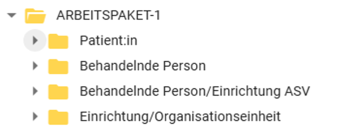
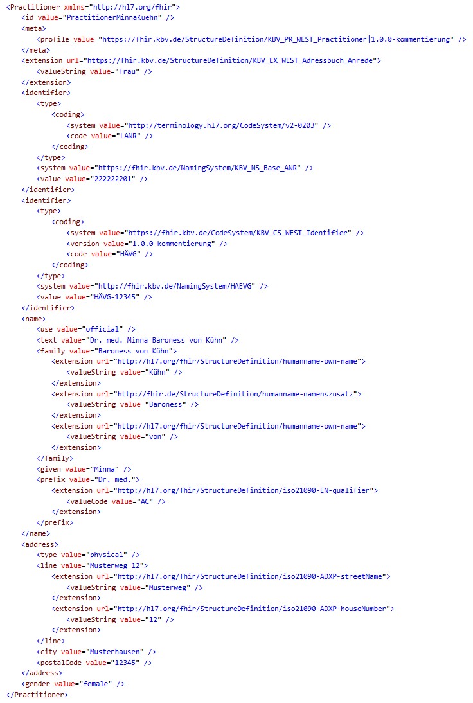
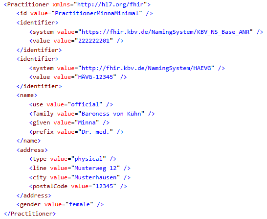
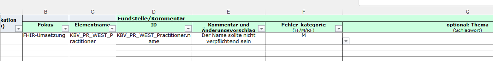

http://fhir.de/CodeSystem/icd-10-gm-mehrfachcodierungs-kennzeichen
http://loinc.org
http://standardterms.edqm.eu
http://www.orpha.net
urn:ietf:bcp:47
urn:iso:std:iso:3166
This fragment is not visible to the reader
This publication includes IP covered under the following statements.
| Type | Reference | Content |
|---|---|---|
| web | fhir.kbv.de |
Value of extension
Binding: https://fhir.kbv.de/ValueSet/KBV_VS_WEST_Betriebsstaetten_Hierarchie ( required ) |
| web | fhir.kbv.de |
Betriebsstätten-Hierarchie (Haupt/Nebenbetriebsstätte)
URL: https://fhir.kbv.de/StructureDefinition/KBV_EX_WEST_Betriebsstaette_Hierarchie Binding: https://fhir.kbv.de/ValueSet/KBV_VS_WEST_Betriebsstaetten_Hierarchie ( required ) |
| web | fhir.kbv.de |
Der Link https://fhir.kbv.de/ValueSet/KBV_VS_WEST_Patient_VSDM_Gender
führt nicht zum ValueSet. |
| web | fhir.de |
Auf Simplifier ist der FixedValue “ http://fhir.de/sid/asv/teamnummer
” im Element identifier.system definiert. Da nicht jeder Arzt im ASV-Kontext arbeitet, ergibt diese Angabe keinen Sinn. |
| web | mio.kbv.de |
IG © 2025+ mio42 GmbH
. Paket kbv.mio.west#1.0.0-kommentierung basierend auf FHIR 4.0.1
. Generiert 2026-03-18
Links: Table of Contents | QA Report |
| web | fhir.kbv.de |
The codes SHALL be taken from For codes, see
https://fhir.kbv.de/ValueSet/KBV_VS_WEST_Betriebsstaetten_Hierarchie
( required to https://fhir.kbv.de/ValueSet/KBV_VS_WEST_Betriebsstaetten_Hierarchie
)
|
| web | fhir.kbv.de |
The codes SHALL be taken from https://fhir.kbv.de/ValueSet/KBV_VS_WEST_Betriebsstaetten_Hierarchie
( required to https://fhir.kbv.de/ValueSet/KBV_VS_WEST_Betriebsstaetten_Hierarchie
)
|
| web | fhir.kbv.de |
The codes SHALL be taken from https://fhir.kbv.de/ValueSet/KBV_VS_WEST_Betriebsstaetten_Hierarchie
( required to https://fhir.kbv.de/ValueSet/KBV_VS_WEST_Betriebsstaetten_Hierarchie
)
|
| web | fhir.kbv.de | https://fhir.kbv.de/ValueSet/KBV_VS_WEST_Betriebsstaetten_Hierarchie |
| web | ihe-d.de |
The codes SHALL be taken from For codes, see
http://ihe-d.de/ValueSets/IHEXDShealthcareFacilityTypeCode
( required to http://ihe-d.de/ValueSets/IHEXDShealthcareFacilityTypeCode
)
|
| web | ihe-d.de |
The codes SHALL be taken from http://ihe-d.de/ValueSets/IHEXDShealthcareFacilityTypeCode
( required to http://ihe-d.de/ValueSets/IHEXDShealthcareFacilityTypeCode
)
|
|
Arbeitspaket_1_-_abgeschlossen_image-2026-1-15_10-59-51-1_version_1.png  |
|
Arbeitspaket_1_-_abgeschlossen_image-2026-1-15_11-0-1-1_version_1.png |
|
Arbeitspaket_1_-_abgeschlossen_image-2026-3-2_14-31-9_version_1.png  |
|
Arbeitspaket_1_-_abgeschlossen_image-2026-3-2_14-4-55_version_1.png  |
|
Arbeitspaket_2_image-2026-3-5_15-45-6-1_version_1.png
|
|
Kommentierung_der_Arbeitspakete_image-2026-1-15_11-2-56-1_version_1.png  |
|
tree-filter.png
|